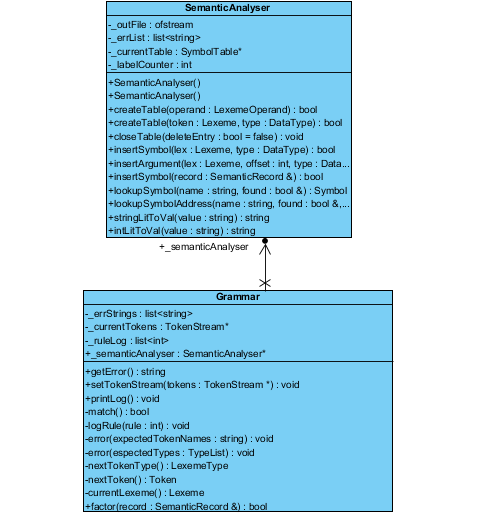
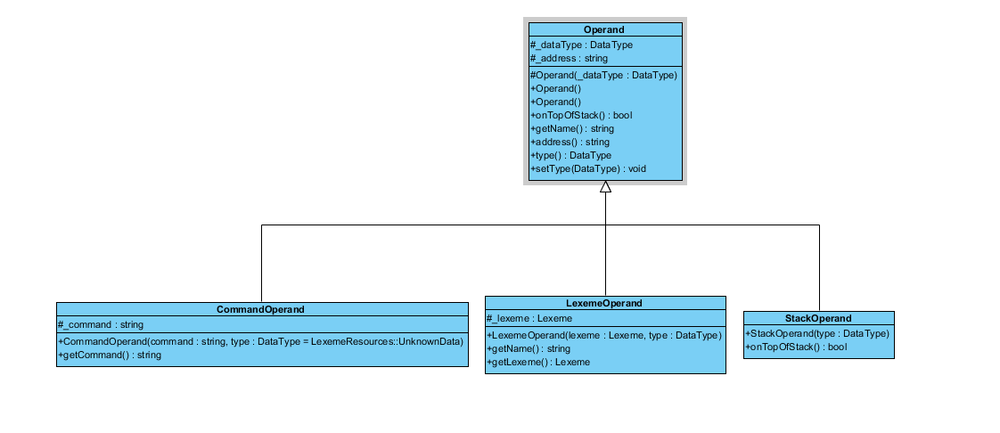
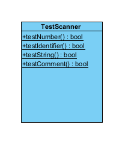

UML
As noted elsewhere, a clear outline was given to all teams for the design and implementation of the scanner, parser, and semantic analyzer. With approval, teams were allowed to vary their actual designs and implmementations. The scanner was the only module that required UML ahead of time. That is provided on this page along with the UML for the scanner as it actually was implemented.
UML




